Benchmarks¶
Parakeet is benchmarked head-to-head against general array compilers
(torch.compile,
JAX jit,
Numba,
CuPy, NumPy) and specialist libraries
(Faiss,
PyKeOps,
scikit-learn, SciPy,
LightGBM,
XGBoost,
PyTorch SDPA /
cross_entropy,
edlib, Biopython,
Biotite, and RDKit).
Every figure on this page is a standalone single-panel chart plotting all
individual warmed replicates (where recorded), the interquartile range
(IQR, 25th–75th percentile), and the median directly from the committed
raw JSON logs.
At a glance (NVIDIA A100 & 24-core AMD EPYC)¶
Flagship GPU measurements come from an NVIDIA A100-SXM4-40GB (TF32 Tensor
Cores enabled where noted, GPU-resident float32 inputs, explicit CUDA
synchronization, reference-checked outputs, n = 21 kernel replicates /
n = 20 training steps). High-core CPU measurements come from a 24-core AMD
EPYC 7B13 (24 threads, n = 11 replicates).
Raw JSON downloads: A100 large-scale · A100 release-scale · A100 nanoGPT suite · A100 PTX vs. NVRTC vs. nvcc · A100 pairwise scaling · 24-core EPYC array suite · 24-core EPYC bio suite.
Baseline policy & Parakeet implementation styles: Where multiple Parakeet spellings (
_numpybroadcasting,_compcomprehensions,_parexplicit data-parallel operators,_helperswrapped NumPy helpers,_loopsequential loops, andpar.nn.Modulevs. functional nanoGPT) or CUDA compiler paths (nvrtc,ptx,nvcc) were measured on the same hardware, all measured variants are plotted together.
Key takeaways:
- Large-scale pairwise workloads on A100 (
16,384 × 65,536 × 32, 1.07 billion pairs): - Exact 1-NN: All four parallel Parakeet styles (
_numpy,_comp,_par,par.map) land at 13.90–13.93 ms — 4.7× faster than JAXjit(64.91 ms), 2.4× faster thantorch.compilebroadcasting (33.04 ms), 1.5× faster than PyTorchcdist(21.22 ms), and 1.27× faster than PyKeOps (17.60 ms), while CuPy OOMs trying to allocate a137.4 GBdistance matrix. Onlytorch.compile(cdist)(6.73 ms) and Faiss (8.16 ms) are faster. - Gaussian / RBF regression: Parakeet
_numpy/_helpers/_parland at 28.85–28.89 ms — 2.55× faster than JAXjit(73.50 ms), 1.60× faster than PyTorchcdist(46.28 ms), and 1.48× faster thantorch.compilebroadcasting (42.56 ms), while CuPy OOMs (137.4 GB) andtorch.compile(cdist)fails the TF32 accuracy check (max abs err 0.007). PyKeOps leads at21.79 ms. - Pairwise fold scaling on A100 (
R = 1,024 → 16,384): Tiled pairwise folds cut latency 206× atR = 16,384(100.27 → 0.486 ms) and global scratch memory 21× (64 → 3 MiB). - End-to-end nanoGPT training on A100 (zero cuBLAS in Parakeet):
- Small (
16 × 64 × 128 × 2L): Parakeet batched TF32 (5.03 ms) andpar.nn.ModuleTF32 (5.78 ms) beat PyTorch eager (9.30 ms), trailingtorch.compile(3.68 ms) and JAX TF32 (1.72 ms). - Medium (
32 × 128 × 256 × 4L): Parakeet batched TF32 (13.93 ms) andpar.nn.ModuleTF32 (15.43 ms) beat PyTorch eager (17.82 ms), while leaving Adam on the host costs56.70 ms(56 uploads + 54 downloads per step).torch.compileTF32 (6.16 ms) and JAX TF32 (6.05 ms) lead via cuBLAS + CUDA Graphs. - CUDA compiler backends on A100 (
nvrtcvs.nvcc -O3vs. directptx): - NVRTC (13.66 ms,
27.0 scold compile) and standalonenvcc -O3(13.68 ms,26.6 s) produce virtually identical steady-state speed on medium nanoGPT; direct PTX compiles 13.4% faster (23.4 s, bypassing NVRTC for 32/44 kernels) at a ~17% steady-state tradeoff (16.00 ms). - 24-core AMD EPYC 7B13 CPU:
- Exact 1-NN (
1,024 × 4,096 × 32): Parakeet_par/_numpy/_comp/par.map(1.71–1.81 ms) beat scikit-learn brute (4.54 ms, 2.65×), Numba parallel (5.37 ms, 3.13×), Faiss Flat (6.00 ms, 3.50×), PyKeOps (9.19 ms, 5.37×), SciPycKDTree(12.61 ms, 7.36×), and NumPy (280.1 ms, 163×). - Bioinformatics (24 cores): Myers 10.8× faster than C++
edlib, Gotoh 6.8× faster than Biopython C and 10.9× faster than Biotite, Tanimoto 34.4× faster than C++ RDKit, Kabsch 31.6× faster than Biotite, and SSHash long-read RNA at 1,416 Mbp/s.
NVIDIA A100 GPU benchmarks¶
Large-scale GPU workloads (NVIDIA A100, TF32, n = 21)¶
At large problem sizes where materializing intermediate pair matrices hits tens of gigabytes, tiled online monoidal reductions keep working sets in shared memory and registers instead of HBM.
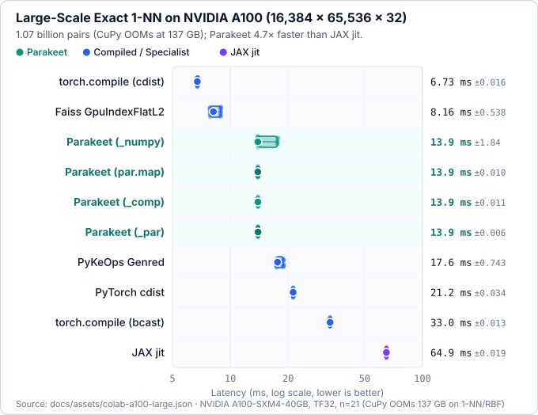
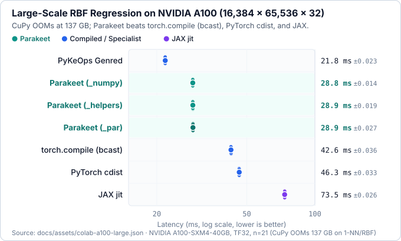
torch.compile(cdist) fails the TF32 accuracy check (max abs err 0.007); Parakeet beats torch.compile broadcast, PyTorch cdist, and JAX jit.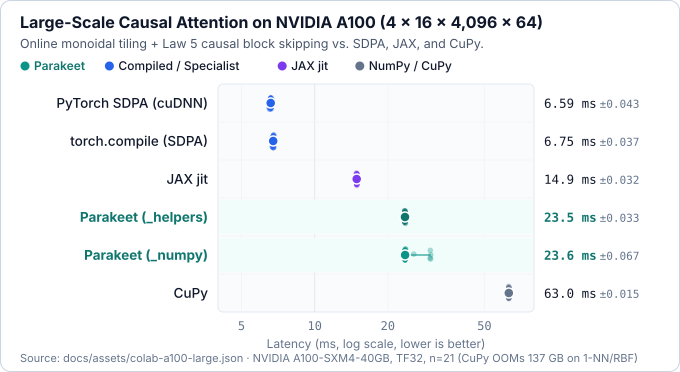
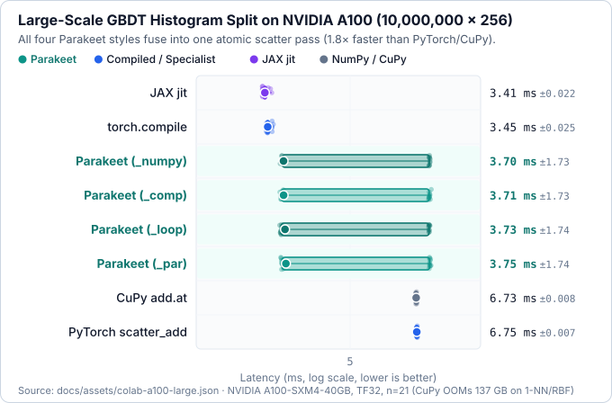
scatter_add and CuPy and within 9% of JAX and torch.compile.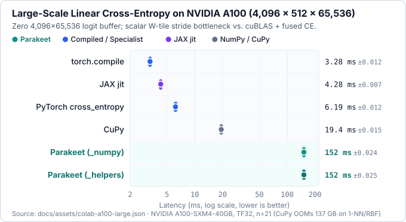
| Workload (NVIDIA A100, TF32) | Parakeet (_numpy / best style) |
PyTorch eager / specialist | torch.compile |
JAX jit |
Specialist (Faiss / PyKeOps) |
CuPy |
|---|---|---|---|---|---|---|
Exact 1-NN (16,384 × 65,536 × 32) |
13.90 ms (all 4 styles 13.90–13.93) |
21.22 ms (cdist) |
6.73 ms (cdist) / 33.04 ms (bcast) |
64.91 ms | 8.16 ms (Faiss) / 17.60 ms (KeOps) |
OOM (137 GB) |
Gaussian RBF (16,384 × 65,536 × 32) |
28.85 ms (_numpy/_helpers/_par) |
46.28 ms (cdist) |
42.56 ms (bcast; cdist TF32 tol fail) |
73.50 ms | 21.79 ms (PyKeOps) |
OOM (137 GB) |
Causal attention (4 × 16 × 4,096 × 64) |
23.54 ms (_helpers / 23.58 _numpy) |
6.59 ms (SDPA) |
6.75 ms (SDPA) |
14.89 ms | - | 62.99 ms |
GBDT split (10,000,000 × 256) |
3.70 ms (all 4 styles 3.70–3.75) |
6.75 ms (scatter_add) |
3.45 ms | 3.41 ms | - | 6.73 ms |
Linear CE (4,096 × 512 × 65,536) |
151.71 ms (0 logit buffer) | 6.19 ms (cross_entropy) |
3.28 ms | 4.28 ms | - | 19.37 ms |
Note on Parakeet styles on CUDA: On GPU, styles that fuse cleanly into monoidal tiles (
_numpy,_helpers,_par,_comp,par.mapwhere no per-iteration heap buffer is allocated) emit identical CUDA kernels and tie within noise. Explicit outer-map spellings that allocate a per-row intermediate buffer inside the parallel body (rbf_regression_comp,causal_attention_par,cross_entropy_par) are rejected under strict--device cudadispatch rather than silently falling back to CPU (recorded cleanly in the JSON).
Release-scale GPU workloads (NVIDIA A100, 1,024 × 4,096 × 32, TF32)¶
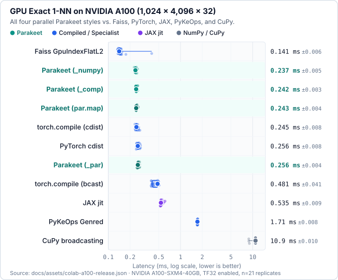
_numpy/_comp/par.map, 0.237–0.243 ms) beats torch.compile, PyTorch cdist, JAX jit, PyKeOps, and CuPy (_par ties cdist at 0.256 ms), trailing only Faiss.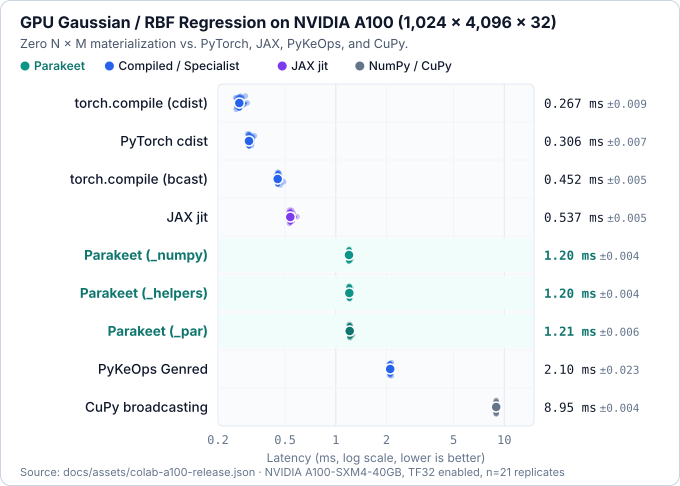
Scaling exact 1-NN with reference count¶
Eliminating the materialized Q × R distance matrix changes both memory
scaling and GPU throughput. On NVIDIA A100
(raw A100 JSON), NVIDIA L4, and NVIDIA A10G
(raw A10G JSON), both broadcasting NumPy and
nested par.map compile to the same tiled pairwise fold
with zero host transfers and exact first-index tie/NaN semantics.
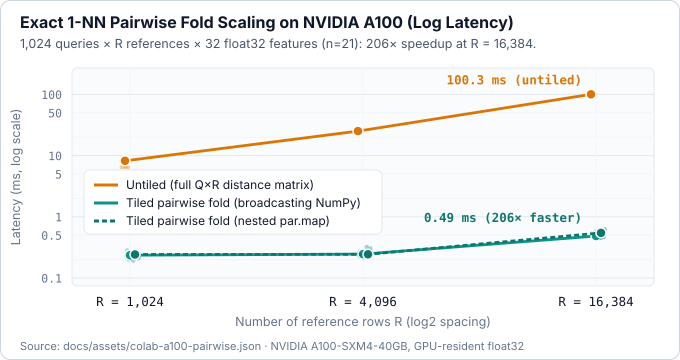

References (Q = 1,024, D = 32) |
A100 Untiled | A100 Tiled NumPy | A100 Tiled par.map |
L4 1.0.0 |
L4 Tiled NumPy | A10G Tiled NumPy | Untiled Scratch | Tiled Scratch |
|---|---|---|---|---|---|---|---|---|
| 1,024 | 8.234 ms | 0.236 ms | 0.242 ms | 0.361 ms | 0.197 ms | 0.135 ms | 4 MiB | 192 KiB |
| 4,096 | 25.199 ms | 0.245 ms | 0.244 ms | 0.787 ms | 0.241 ms | 0.190 ms | 16 MiB | 768 KiB |
| 16,384 | 100.270 ms | 0.486 ms | 0.546 ms | 2.597 ms | 0.542 ms | 0.458 ms | 64 MiB | 3.0 MiB |
End-to-end nanoGPT training (NVIDIA A100)¶
Each step runs the full forward pass, reverse-mode backpropagation, and Adam
update (4 attention heads, median of 20 warmed steps). Parakeet compiles every
GEMM, attention, LayerNorm, and Adam kernel natively with zero cuBLAS calls
and compares four implementations: functional batched TF32, Pythonic
par.nn.Module TF32, functional batched FP32, and a
host-Adam FP32 ablation showing the real round-trip penalty (56 host uploads +
54 downloads per step on L=4) of keeping the optimizer outside @par.jit.
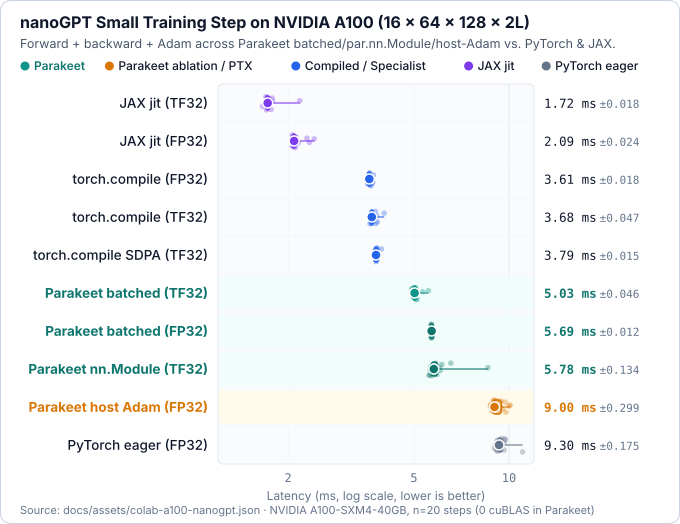
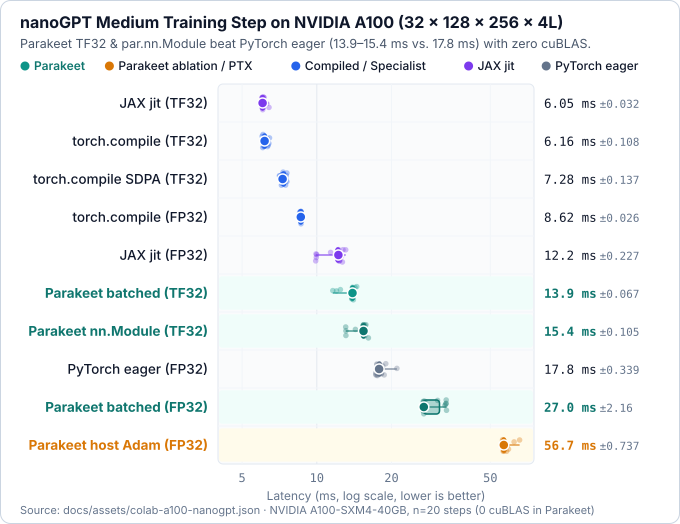
par.nn.Module TF32 (15.43 ms) beat PyTorch eager (17.82 ms) with zero cuBLAS.| Implementation (NVIDIA A100) | Small step (L=2) |
Small cold compile | Medium step (L=4) |
Medium cold compile |
|---|---|---|---|---|
| Parakeet batched (TF32) | 5.03 ms | 8.4 s | 13.93 ms | 19.8 s |
Parakeet par.nn.Module (TF32) |
5.78 ms | 12.7 s | 15.43 ms | 27.1 s |
| Parakeet batched (FP32) | 5.69 ms | 13.3 s | 26.98 ms | 24.7 s |
| Parakeet host-Adam ablation (FP32) | 9.00 ms | 5.4 s | 56.70 ms | 16.3 s |
| PyTorch eager (FP32) | 9.30 ms | 0.6 s | 17.82 ms | 0.04 s |
torch.compile (FP32) |
3.61 ms | 15.2 s | 8.62 ms | 18.7 s |
torch.compile (TF32) |
3.68 ms | 5.4 s | 6.16 ms | 15.4 s |
torch.compile SDPA (TF32) |
3.80 ms | 10.0 s | 7.28 ms | 14.0 s |
JAX jit (FP32) |
2.09 ms | 63.4 s | 12.22 ms | 79.9 s |
JAX jit (TF32) |
1.72 ms | 20.7 s | 6.05 ms | 31.4 s |
CUDA compiler backends: Direct PTX vs. NVRTC vs. nvcc -O3 (NVIDIA A100)¶
Parakeet supports three selectable CUDA code-generation pipelines via
par.config.cuda_compiler (or PARAKEET_CUDA_COMPILER): "nvrtc" (default),
"nvcc" (standalone nvcc -O3), and "ptx" (Parakeet's direct SSA PTX 7.8
emitter loaded via cuModuleLoadDataEx, falling back to NVRTC for libm /
tensor-core kernels). All three were timed back-to-back with a cleared disk
cache on the same NVIDIA A100 (raw compiler JSON).
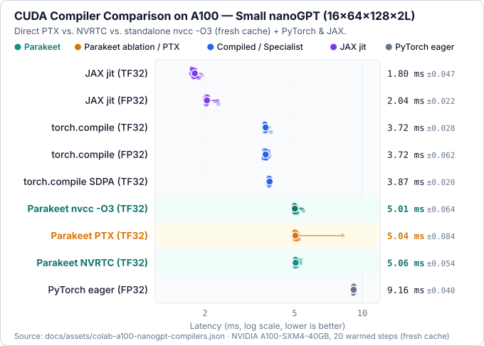
nvcc -O3 (fresh cache, TF32) on small nanoGPT (16 × 64 × 128 × 2L) on NVIDIA A100.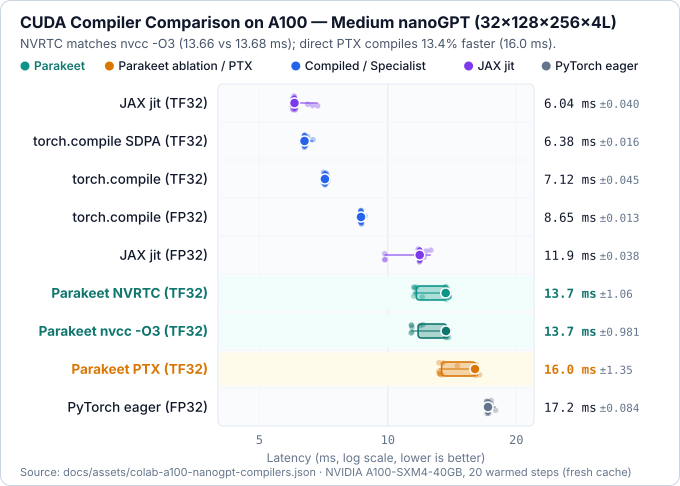
nvcc -O3 (fresh cache, TF32) on medium nanoGPT (32 × 128 × 256 × 4L) on NVIDIA A100. NVRTC and nvcc -O3 tie at 13.66–13.68 ms; direct PTX compiles 13.4% faster (23.4 s) at 16.00 ms steady-state.CUDA compiler backend (cuda_compiler=) |
Small step (L=2) |
Small compile (#kernels) |
Medium step (L=4) |
Medium compile (#kernels) |
|---|---|---|---|---|
"nvrtc" (default) |
5.056 ms | 11.8 s (41 NVRTC) |
13.661 ms | 27.0 s (44 NVRTC) |
"nvcc" (nvcc -O3) |
5.015 ms | 12.5 s (41 nvcc) |
13.682 ms | 26.6 s (44 nvcc) |
"ptx" (direct PTX 7.8 + NVRTC fallback) |
5.041 ms | 14.5 s (29 PTX / 12 NVRTC) |
15.999 ms | 23.4 s (32 PTX / 12 NVRTC) |
NVRTC and nvcc -O3 share NVIDIA's cicc optimizer and land within 0.2% of
each other (13.66 vs. 13.68 ms). Direct PTX cuts cold medium-model compile
time by 13.4% (27.0 → 23.4 s) by skipping C parsing and cicc for 32 of
the 44 unique kernels, while giving up ~17% steady-state speed on memory-bound
elementwise/reduction kernels until vector ld.global.v4 and loop-invariant
code motion land in the PTX emitter. Retaining all three options lets users pick
"nvrtc" or "nvcc" for peak throughput and "ptx" for faster cold builds.
High-core CPU benchmarks (24-core AMD EPYC 7B13)¶
Measured on a 24-core AMD EPYC 7B13 host (24 OpenMP/Parakeet threads,
n = 11 warmed replicates; raw array JSON,
raw bio JSON).
Pairwise search, kernel regression, and histograms (24 cores)¶
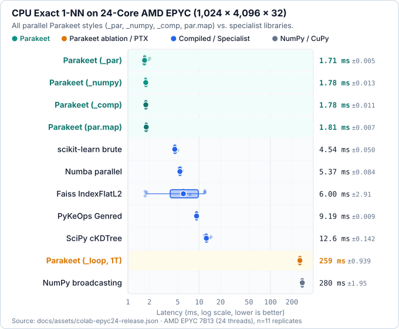
cKDTree (12.61 ms), and NumPy (280.1 ms).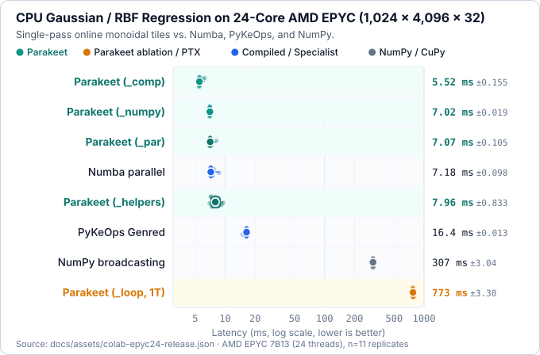
_comp (5.52 ms) and _numpy/_par (7.02–7.07 ms) beat Numba parallel (7.18 ms), PyKeOps (16.42 ms), and NumPy (306.9 ms).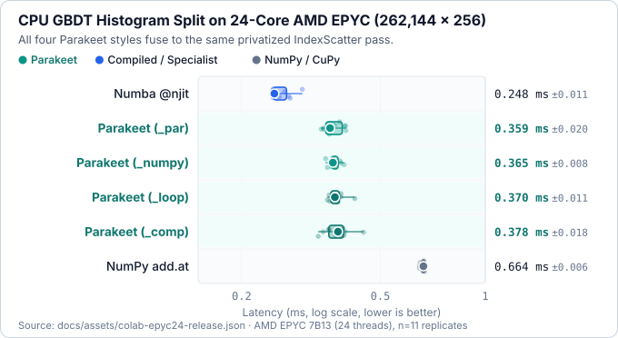
| Implementation (24-core AMD EPYC) | Exact 1-NN (1024×4096×32) |
Gaussian RBF (1024×4096×32) |
GBDT Split (262,144×256) |
|---|---|---|---|
Parakeet _par (explicit operators) |
1.713 ms | 7.074 ms | 0.359 ms |
Parakeet _numpy (broadcasting) |
1.779 ms | 7.022 ms | 0.365 ms |
Parakeet _comp (comprehensions) |
1.782 ms | 5.516 ms | 0.378 ms |
Parakeet par.map / _helpers |
1.808 ms | 7.961 ms | - |
Parakeet _loop (sequential 1T / fused split) |
258.963 ms | 772.729 ms | 0.370 ms |
| scikit-learn brute | 4.543 ms | - | - |
Numba @njit(parallel=True) |
5.369 ms | 7.179 ms | 0.248 ms |
Faiss IndexFlatL2 |
6.000 ms | - | - |
PyKeOps Genred |
9.192 ms | 16.421 ms | - |
SciPy cKDTree (exact) |
12.613 ms | - | - |
| NumPy | 280.062 ms | 306.910 ms | 0.664 ms |
GBDT decision-tree training (24-core AMD EPYC, 50,000 × 16, depth 6)¶
Running benchmarks/tree_models.py
on the same 24-core EPYC host compares Parakeet's compiled pure-BFS and hybrid
BFS→DFS histogram tree builders (using sibling histogram subtraction) against
scikit-learn, LightGBM, and XGBoost (single depth-6 tree, 32 bins; recorded from
benchmarks/tree_models.py stdout):
Implementation (50,000 × 16, 32 bins, depth 6) |
Balanced dataset (median) | Skewed dataset (median) |
|---|---|---|
| Parakeet pure BFS (24T) | 8.83 ms (±0.35) | 5.94 ms (±0.17) |
| Parakeet BFS→DFS (24T) | 9.75 ms (±0.96) | 5.46 ms (±0.18) |
Parakeet BFS→DFS (c, 1T) |
22.67 ms (±0.04) | 9.85 ms (±0.06) |
scikit-learn HistGradientBoosting |
28.66 ms (±0.34) | 27.70 ms (±0.53) |
| LightGBM (1 tree) | 3.53 ms (±0.07) | 5.65 ms (±0.34) |
XGBoost hist (1 tree) |
3.26 ms (±0.04) | 3.16 ms (±0.02) |
On the skewed dataset, Parakeet's BFS→DFS schedule (5.46 ms) beats both pure
BFS (5.94 ms) and LightGBM (5.65 ms) and runs 5.07× faster than
scikit-learn's Cython HistGradientBoosting (27.70 ms), while XGBoost leads
at 3.16 ms.
Bioinformatics and structural biology (24-core AMD EPYC)¶
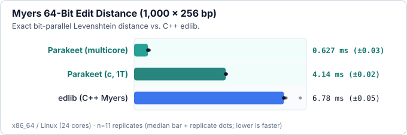
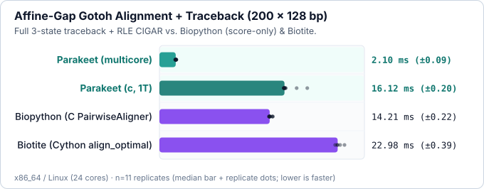
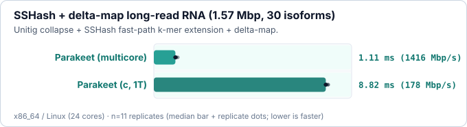
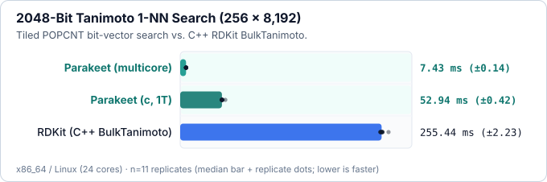
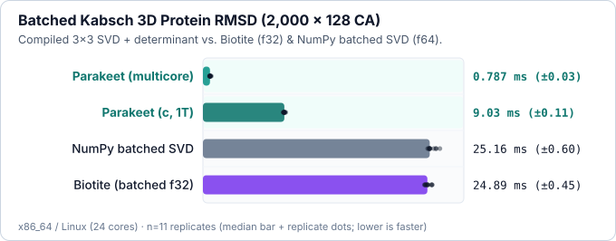
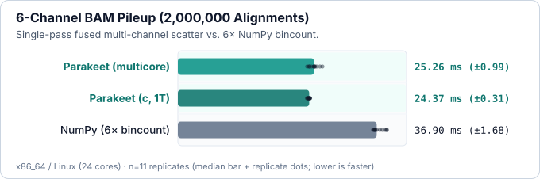
bincount (36.90 ms).| Workload (24-core AMD EPYC) | Parakeet (24T) | Parakeet (c, 1T) |
Specialist / Baseline | Speedup vs. Baseline | Implementation |
|---|---|---|---|---|---|
Edit distance (1,000 × 256 bp, Myers) |
0.627 ms | 4.144 ms | edlib (C++ Myers): 6.780 ms | 10.8× (1.6× at 1T) | examples/bio_algorithms.py |
Affine-gap Gotoh + traceback (200 × 128 bp) |
2.104 ms | 16.117 ms | Biopython C (score-only): 14.214 ms; Biotite: 22.977 ms | 6.8× vs Biopython, 10.9× vs Biotite | examples/bio_algorithms.py |
2048-bit Tanimoto 1-NN (256 × 8,192) |
7.434 ms | 52.941 ms | RDKit (BulkTanimoto): 255.444 ms |
34.4× (4.8× at 1T) | examples/bio_gallery.py |
Batched Kabsch 3D RMSD (2,000 × 128 CA) |
0.787 ms | 9.033 ms | Biotite (f32): 24.895 ms; NumPy (f64): 25.161 ms | 31.6× vs Biotite, 32.0× vs NumPy | examples/bio_algorithms.py |
6-channel BAM pileup (2M alignments) |
25.260 ms | 24.375 ms | NumPy (6× bincount): 36.904 ms |
1.5× | examples/bio_gallery.py |
SSHash + delta-map RNA (1.57 Mbp, 30 isoforms) |
1.107 ms (1,416 Mbp/s) | 8.819 ms (178 Mbp/s) | 8.0× multicore scaling | - | examples/patro_longread_rna.py |
Notes on fairness:
- On single-threaded Gotoh alignment, Biopython's C
PairwiseAligner.score()computes scores only whereas Parakeet'sgotoh_global_alignpopulates full traceback tables and builds run-length-encoded CIGAR arrays. - On Kabsch 3D RMSD, Biotite internally converts coordinates to
float32, while both Parakeet (compilednp.linalg.svd+det) and NumPy compute infloat64. - On
edlibandRDKit, part of Parakeet's advantage comes from batching the entire query set inside one GIL-free compiled loop instead of crossing the Python-to-C boundary once per read or fingerprint.
Benchmark implementations and reproduction¶
Every figure on this page is backed by runnable repository code and committed
raw JSON samples (and the GBDT decision-tree table is reproduced directly from
benchmarks/tree_models.py):
| Suite / Workload | Runnable code | Repro command |
|---|---|---|
| Unified Colab A100 & high-core CPU runner | tools/colab_full_bench.py |
PK_BENCH_MODE=gpu runplz colab tools/colab_full_bench.py |
| Release & large-scale cross-framework suite | benchmarks/release_comparison.py |
python -m benchmarks.release_comparison array out.json --scale large --tensor-cores |
| nanoGPT GPU & CUDA compiler suite | benchmarks/nanogpt_bench.py |
python -m benchmarks.nanogpt_bench --device cuda --compare-cuda-compilers |
| Bioinformatics head-to-head suite | benchmarks/bio_head_to_head.py |
python -m benchmarks.bio_head_to_head |
| GBDT decision-tree benchmark | benchmarks/tree_models.py |
python -m benchmarks.tree_models |
| GPU exact 1-NN pairwise fold scaling | benchmarks/gpu_pairwise_fold.py |
python -m benchmarks.gpu_pairwise_fold |
| Regenerate all single-panel SVG figures | tools/gen_benchmark_figures.py |
python tools/gen_benchmark_figures.py |
Earlier hardware baselines (NVIDIA L4, Apple M1 Pro, and 1.0.0 A10)¶
Earlier measurements from NVIDIA L4 + 4-thread CPU, Apple M1 Pro (10 cores), and the historical 1.0.0 Modal NVIDIA A10 release are preserved below for longitudinal continuity.
NVIDIA L4 & 4-thread CPU¶
Raw JSON downloads:
L4 forward suite (0dcb7d5) ·
L4 nanoGPT (7bb1dcc).
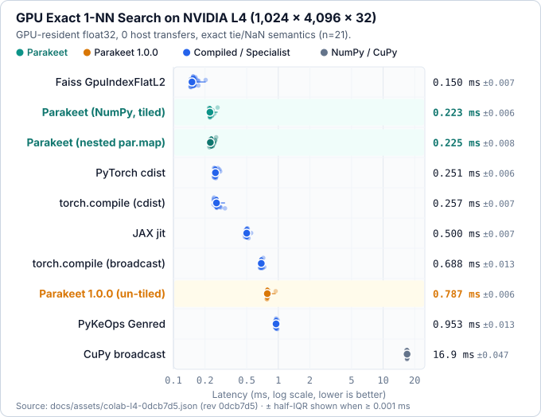
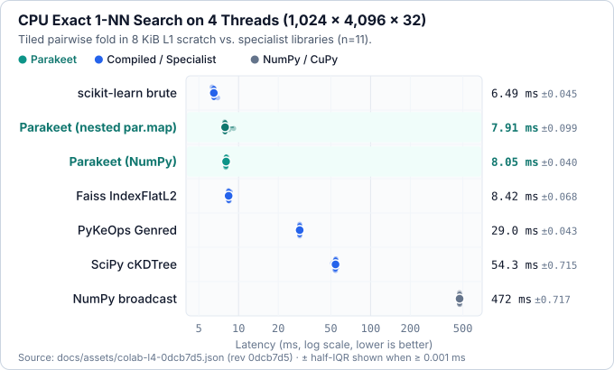
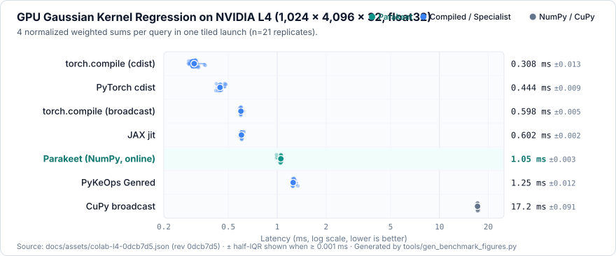


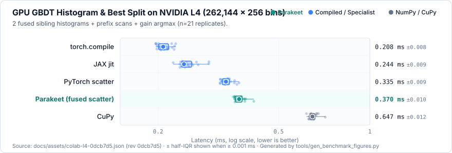
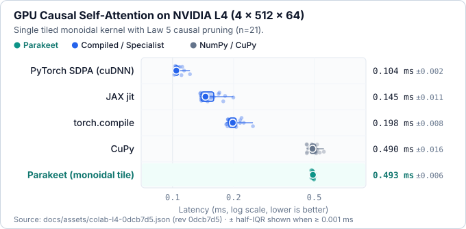
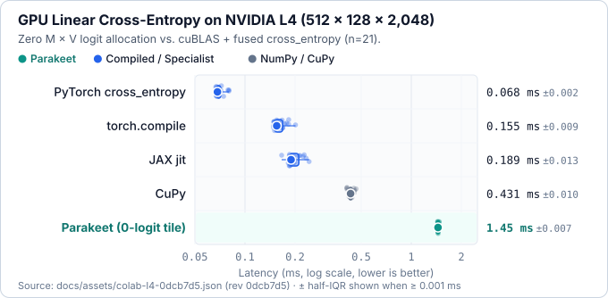
End-to-end nanoGPT training (NVIDIA L4)¶

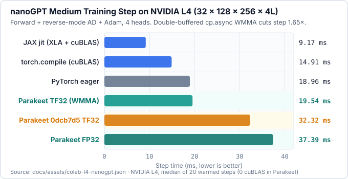
Bioinformatics and structural biology (Apple M1 Pro, 10 cores)¶
Download Apple M1 Pro bio JSON.
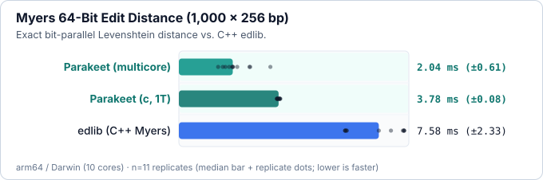


Historical 1.0.0 baseline (Modal NVIDIA A10 & 4-vCPU)¶
For continuity with the original 1.0.0 release (compiler revision
0345559f, NVIDIA A10 24 GiB, driver 620.70.06, 4-vCPU worker), the initial
pre-pairwise-fold measurements are archived in
Download raw 1.0.0 Modal JSON.
Methodology notes¶
- Every benchmark arm is checked against a reference implementation (exact index equality for 1-NN and split finding; tight floating-point tolerance for reductions, attention, and training losses).
- GPU arms time GPU-resident inputs with explicit CUDA synchronization before and after each replicate; first-call compilation times are recorded separately in the JSON downloads and excluded from warmed medians.
- On CPU, Parakeet's pairwise fold allocates an
8 KiB(16 × 128float32) score tile plus192 Bof row summaries per active strip; on GPU, it uses a16 KiBshared-memory score tile per block andO(Q · #tiles)global partial winners rather than anO(Q · R)distance matrix.